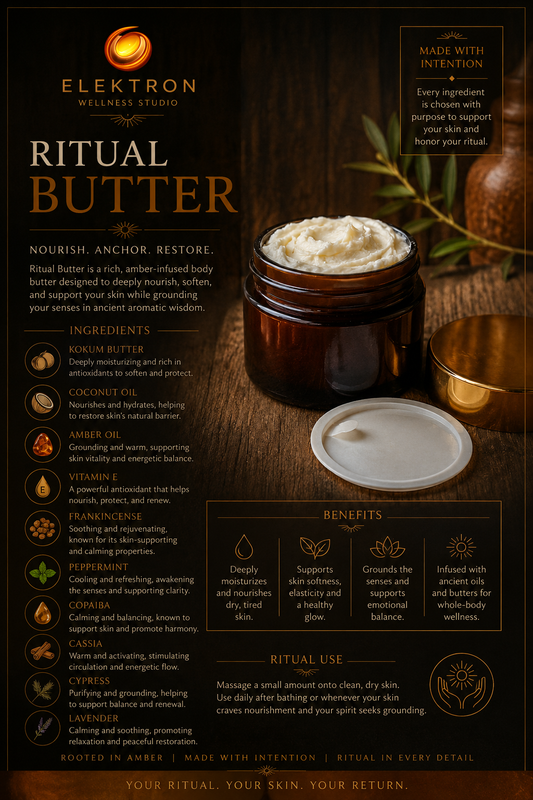

“
Reflections will appear here as they are approved.
ELEKTRON
ELEKTRON WELLNESS STUDIO
ELEKTRON Wellness Studio creates amber-infused ritual products, guided practices, symbolic objects, and artwork designed to support grounding, restoration, reflection, transition, and intentional living.

What ELEKTRON Means
The word Elektron comes from the ancient Greek word for amber. Amber has long been associated with warmth, preservation, beauty, energy, and protection. That symbolism is the heart of the studio.
Upcoming Event
ELEKTRON Wellness Studio will be vending again at the Blue Jay Market on May 9 at Bennetts Valley Community Center.
Come experience the products in person, explore the ritual offerings, and connect with the materials behind ELEKTRON.
My Story
A quieter, steadier return became the foundation of ELEKTRON.
Before ELEKTRON, my life felt chaotic and ungrounded. I was constantly moving, but without a real sense of steadiness or connection to myself. I knew something was missing, but I didn’t yet know what would bring me back into alignment.
About five years ago, I came across amber and began learning about its use. What started as curiosity quickly became something much more personal. When I began working with amber, I started to feel lighter, calmer, and more grounded. It wasn’t sudden or overwhelming—it was steady, and it was real.
That feeling stayed with me. I didn’t question it—I followed it. I began incorporating amber into my daily life in ways that felt natural: holding an amber fossil in my hand, using oils, creams, and teas, and creating small moments of pause and intention throughout my day.
Over time, those small moments became a practice. And that practice became a foundation. Amber became more than a material—it became symbolic, spiritual, and part of a disciplined way of returning to myself.
The more I worked with it, the more I felt supported. I felt clearer. More present. More stable in the way I moved through life. That experience is what led me to create ELEKTRON.
ELEKTRON was built from lived experience. Everything here comes from what I have worked with, what I have felt, and what I continue to practice. It is not about quick change. It is about return, grounding, and creating a steady relationship with yourself through intentional practice.
ELEKTRON was born from that return. Ancient natural alchemy of restoration and growth to peace within.
Understanding ELEKTRON
How do you use amber to improve your life?
Amber is not used as a quick fix. It becomes part of a daily practice. Through touch, presence, and intentional use, it supports grounding, calm, and awareness. Over time, it helps create steadiness in how you move through your day.
How do you work with amber to create wellness products?
Amber is incorporated through infusion, physical presence, and formulation. It is used in oils, creams, and ritual objects in ways that maintain its natural integrity while allowing it to be experienced both physically and symbolically.
Are the products your invention? Are they unique to you?
The use of amber itself is not new. What is unique is the way it is brought together here. ELEKTRON is built from personal practice, intentional formulation, and a specific approach to ritual, consistency, and grounded living.
When you use the term “studio,” what does that mean?
The term “studio” refers to both a creative and working space. It is where products are developed, rituals are created, and ideas are brought into form. It is not limited to a physical location—it is a way of working and creating.
What process or technique do you follow?
The process is structured but not rigid. It follows a rhythm of returning, grounding, and sustaining. It includes consistent use of products, intentional moments of pause, and a disciplined approach to daily practice.
What prayers? Meditation?
There is space for both, but nothing is required. ELEKTRON is designed to be accessible. Some may use prayer or meditation, while others simply use the products as a grounding ritual. The practice adapts to the individual.
Where do you get your amber?
The amber used in ELEKTRON comes from Sumatra, Indonesia. It is sourced in raw form and then selected, prepared, and incorporated into products and ritual objects.
Describe the country the amber comes from and the different types of amber.
The amber used in ELEKTRON comes from Sumatra, an Indonesian island known for its lush tropical landscape, volcanic earth, and deep natural richness. The primary types used are blue and red amber from Sumatra. Each carries its own visual and symbolic qualities, but both are valued for their depth, warmth, and presence within the ELEKTRON practice.
Myth vs Function
Reflections
These reflections hold the words of those who have experienced ELEKTRON through ritual, product, and personal practice.
Reflections will appear here as they are approved.
Have you experienced ELEKTRON in your own life? Share your reflection below.
Start Here
Choose your path: 30-Day Ritual Reset, 7-Day Grounding, or Ritual Invitation Box.
A 30-day guided ritual experience for rhythm, discipline, and daily practice.
Start the ResetA shorter guided grounding experience for stabilization, reconnection, and return.
Begin GroundingAn entry point into the ELEKTRON world through ritual, grounding, and intentional practice.
Explore the BoxWhat We Are
ELEKTRON Wellness Studio is a ritual-based creative wellness studio. It is built around the belief that meaningful change happens through consistent practice, intentional care, symbolic connection, and grounded return to self.
The studio brings together several forms of work: guided ritual experiences, amber-infused wellness products, symbolic ritual objects, and artwork that carries emotional, spiritual, and visual meaning.
The purpose is not simply to sell items. The purpose is to create products that help people reconnect with themselves in ways that are tangible, supportive, and deeply intentional.
Why Amber
Amber represents warmth, preservation, grounding, beauty, light, and ancient memory. It carries a sense of being both natural and enduring.
In spiritual and ritual practice, amber is often associated with protection, clearing heaviness, stabilizing the self, and encouraging warmth and vitality.
Amber symbolism speaks to comfort, steadiness, reassurance, and return. It reflects the feeling of being held through transition rather than pushed through it.
Amber is not just an ingredient or aesthetic reference for ELEKTRON. It is the visual, symbolic, and spiritual thread that connects the entire studio.
How The Products Help
The studio’s products are meant to support calm, reassurance, grounding, clarity, and emotional reset during overwhelm, transition, and inner work.
Body products and tactile ritual objects invite presence through touch, care, sensory awareness, and the physical act of slowing down.
Guided practices and symbolic pieces create space for intention, prayer, ritual, meditation, protection, and meaningful return to sacred focus.
The artwork and symbolic aesthetic of ELEKTRON are meant to inspire reflection, expression, imagination, and deeper connection to personal symbolism.
What We Create
Structured experiences like the 30-Day Ritual Reset and 7-Day Grounding, created to help people rebuild rhythm, awareness, and daily intentional practice.
Oils, body products, and other supportive items created to be used as part of personal wellness, ritual care, grounding, and reflective practice.
Symbolic individual objects and bundled sets designed for grounding, transition, intention setting, meaningful gifting, and ceremonial support.
Art pieces that carry emotional and spiritual symbolism, extending the ELEKTRON world beyond products into image, story, and visual meaning.
Products
A 30-day guided ritual experience created to rebuild rhythm, discipline, and intentional daily practice.
View productA shorter guided grounding experience created for stabilization, reconnection, and intentional return.
View product
A symbolic amber piece created to support grounding, stability, and intentional return.
View productA pure amber-infused body oil with a piece of amber in every bottle, created for nourishment and grounding.
View productA ritual tea created to support warmth, clarity, and intentional awakening.
View productA symbolic set created for transition, new beginnings, and stepping into a new season of life.
View productA bundled ritual set created to support consistency, return, and ongoing intentional practice.
View productAn entry point into the ELEKTRON world, created to introduce ritual, grounding, and intentional practice.
View product
A rich amber-infused body butter designed for restoration, softness, grounding, and embodied support.
View productTwo amber-centered exfoliating ritual scrubs created for renewal, grounding, and restoration.
View productA grounding aromatic mist created to clear space, awaken the senses, and support intentional presence.
View productA gentle sugar-based exfoliant designed to smooth, soften, and restore the lips through intentional care.
View productStill Not Sure?
If you want the full structured experience, begin with the 30-Day Ritual Reset.
If you need something shorter and more immediate, begin with 7-Day Grounding.
If you want a physical entry point into the ELEKTRON world, begin with the Ritual Invitation Box.
Founding Members
Those who arrive early help shape what ELEKTRON becomes.
Founding Members